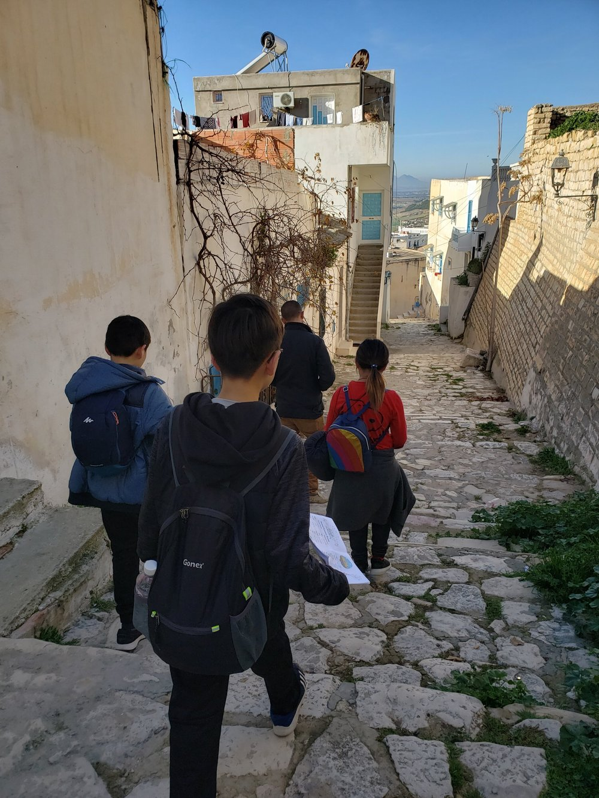
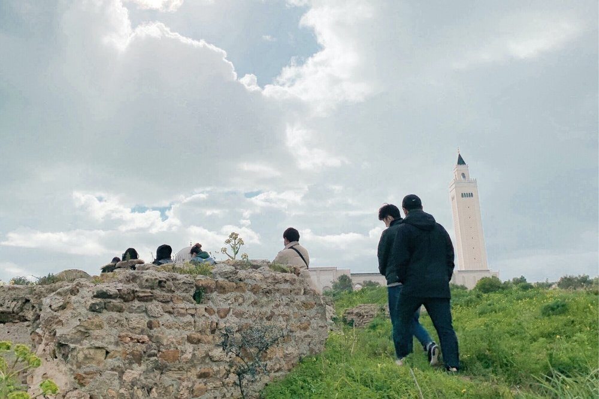

What We Do ---
One Body.
Many Branches, One Mission.
InterCP International began in 1983 with a small group of university students. Today, through its branches in Korea and around the world, it trains about 14,000 people every year and has sent about 5,900 missionaries to over 55 people groups in the 10/40 Window, planting churches through education, medicine, development, research, and volunteer work.
Staff
4.5k

Serving
over 55 peoples


Overseas, about
400 branches

Missionaries
5.9k+
People trained each year
14k
